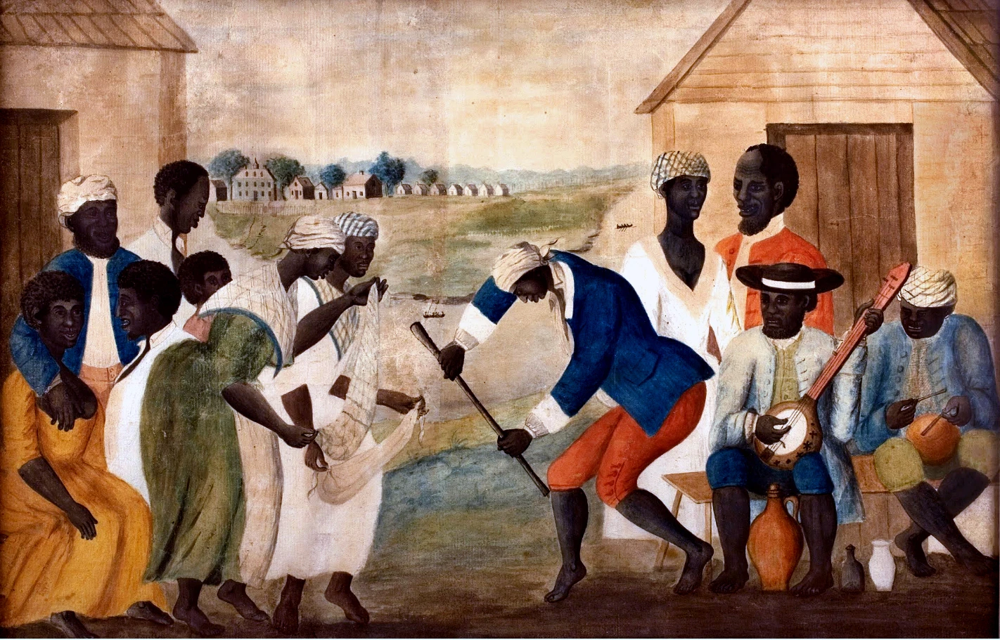

Afrodescendientes
en el Arte Colonial
OBRAS DESTACADAS
SOBRE LA EXPOSICIÓN
Esta exposición virtual complementa la muestra física y busca desdibujar la idea simplista de que todos los afrodescendientes en la época colonial eran esclavos.
A través de obras seculares, religiosas y retratos, descubriremos cómo los afrodescendientes ocupaban roles diversos y complejos en la sociedad colonial: comerciantes, artesanos, líderes religiosos y figuras de confianza en las élites.
NARRATIVAS
PÚBLICO GENERAL
Un recorrido narrativo que conecta el pasado con el presente, revelando cómo estas obras nos ayudan a comprender las dinámicas socioculturales actuales.
EXPLORAR →ESPECIALISTAS
Una exploración académica y detallada de las obras, organizada por temáticas: seculares, religiosas y retratos. Ideal para investigadores y estudiosos del arte colonial.
EXPLORAR →